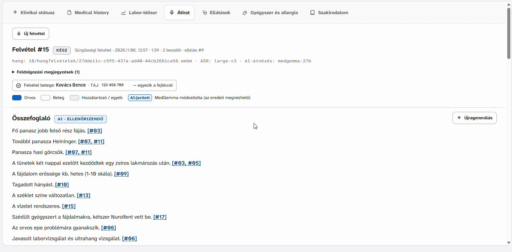
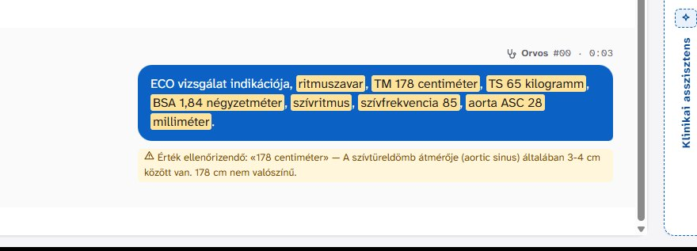

Teljes betegkép és friss tudományos kutatás, karnyújtásnyira.
Percek alatt átlátható kép a betegről, betegre szabott szakirodalom egy kattintással, és minden állítás mögött ott a forrás.

Szétszórt klinikai adatok,
szűkös orvosi idő
A beteg előzményei szétszórtak: ambuláns lapok, laborleletek, zárójelentések és gyógyszerlisták, gyakran több intézményből. Az orvosnak kevés perce van, hogy mindezt átlássa és felelős döntést hozzon.
Teljes kép percek alatt
A rendszer összefésüli a beteg minden dokumentumát, és azonnal átlátható képet ad az aktuális állapotról.
Tudás a beteghez szabva
Egy kattintással friss, releváns publikációk a konkrét beteg állapotához, indoklással együtt.
Bizalom és biztonság
Minden állítás a forrásig visszakövethető, és a betegadat nem hagyja el az intézményt.
¹ Sinsky C. és mtsai: Allocation of Physician Time in Ambulatory Practice. Annals of Internal Medicine, 2016. ² Del Fiol G. és mtsai: Clinical questions raised by clinicians at the point of care. JAMA Internal Medicine, 2014.
Egy rendszer, a teljes betegút
A MediAI Assistant az orvos mindennapi munkájának minden lépését támogatja, a leletek átnézésétől a zárójelentésig.
Egységes betegkép
Minden lelet egy helyen, automatikusan felismerve és rendszerezve.
Labor és gyógyszerek
Értékek időbeli trendje, kóros eltérések, gyógyszer-interakciós riasztások.
Klinikai státusz
Közérthető összefoglaló és proaktív vizsgálati javaslatok.
Klinikai asszisztens
Szabad szavas kérdések a beteg állapotáról: az MI a beteg dokumentumai alapján válaszol, minden válasz a forrására hivatkozik.
Szakirodalmi kutatás
Friss publikációk a beteghez, indoklással, hogy miért relevánsak.
Hangalapú dokumentálás
A beteglátogatásból automatikusan kész, strukturált dokumentáció.
Ultrahang-leletezés
Echokardiográfiás diktálás vizsgálat közben, ellenőrzött mérési adatokkal.
Kórtörténet és epikrízis
Egy kattintással, szerkeszthetően, exportálhatóan.
Mindez teljesen az intézmény saját szerverén fut, több, orvosi célra finomhangolt MI-modellel, külső MI-szolgáltató és tokenalapú díj nélkül.
Teljes anamnézis áttekintése azonnal
A beteg leletei egyszerűen importálhatók a rendszerbe. A MediAI Assistant felismeri és kategorizálja a dokumentumokat, kiolvassa az adatokat, és a teljes beteget újraértékeli.
- Labor-idősor: az értékek időbeli trendje azonnal áttekinthető, a kóros eltérések kiemelve.
- Gyógyszer-interakció: szabályalapú riasztás súlyosság szerint, nyilvános gyógyszer-adatbázis alapján, azzal együtt, hogy mit nem tudott ellenőrizni.
- Klinikai státusz: közérthető összefoglaló a kritikus figyelmeztetésekkel és proaktív vizsgálati javaslatokkal.

Minden állítás a forrásával
A MediAI Assistant nem fekete doboz. Az MI elemez, de az ellenőrzés és a döntés mindig az orvosé.
- Egy kattintás a forrásig: megnyílik az eredeti dokumentum, a pontos sor vagy szövegrész kiemelve.
- Háromféle állítás, jól elkülönítve: szabályalapú jelzés, szó szerinti forrásidézet, és MI-következtetés bizonytalansági jelöléssel.
- Ellenőrzött idézetek: a forrásidézet egyezését nem az MI ellenőrzi, hanem a rendszer.
- Az orvos dönt: minden állítás elfogadható, módosítható vagy elvethető, és minden döntés nyomon követhető.

Egyénre szabott tudományos kutatás, mély kereséssel
Betegellátás közben gyakran felmerül egy szakmai kérdés. A MediAI Assistant másodpercek alatt a konkrét beteg állapotához illő, friss publikációkat keres, és meg is mondja, miért relevánsak.
- Betegre szabott keresés: a keresési javaslat a beteg klinikai képéből készül, az orvos átírhatja vagy kiegészítheti.
- Megbízható források: PubMed, Cochrane áttekintések, Europe PMC. A szerző, az év és az azonosító mindig a forrásból jön.
- Intelligens rangsor: minden találat relevancia szerint besorolva, a legfontosabbak indoklással kiemelve.
- Adatvédelem: kifelé csak az orvos által jóváhagyott, azonosítóktól szűrt keresőkifejezés megy.

Az orvos a betegre figyel, a dokumentáció közben elkészül
A MediAI Assistant egy egyszerű beteglátogatást ugyanúgy dokumentál, mint egy szakorvosi vizsgálatot.
- Rögzíti a beszélgetést, és az orvos hangprofilja alapján szétválasztja a beszélőket.
- Strukturált dokumentáció hat csoportban: panaszok, vizsgálati megállapítások, diagnózisok, javasolt gyógyszerek, beutalók, javaslatok és kontroll.
- Mondatonként visszakereshető összefoglaló: minden állítás mögött ott a pontos megszólalás.
- Echokardiográfiás diktálásra külön hangolt mód: a mérések diktálhatók vizsgálat közben.
- A rendszer kigyűjti a mérési adatokat, és jelzi a valószínűtlen értékeket.
- Számot, mértékegységet és tagadást az MI nem írhat át.


Kórtörténet és epikrízis egy kattintással
Ami korábban órákig tartott, most percek alatt, teljes körűen elkészül.
- Kórtörténeti összefoglaló és klinikai idővonal a beteg összes leletéből, minden bejegyzés a forrásleletre hivatkozva.
- Epikrízis-tervezet az ellátás leleteiből, hangfelvételeiből és gyógyszerlistájából.
- Beépített ellenőrzés: ha egy idézet nem található a forrásban, a sor „Ellenőrizendő” jelölést kap.
- Szerkeszthető és exportálható: egy kattintással Word formátumba.

Amikor minden perc számít
A mentő úton van a beteggel a kórház felé. Az orvosnak mindössze néhány perce marad, hogy felkészüljön az érkezésére. A MediAI Assistant segít, hogy ez a néhány perc elég legyen.
Érkezés előtt: a teljes kép
A korábbi leletek, laborok és a gyógyszerlista egy helyen, néhány mondatos állapot-összefoglalóval.
Kockázatok azonnal
Kóros laborértékek, ismert allergiák és gyógyszer-interakciók kiemelve, súlyosság szerint.
A tervezett kezelés ellenőrzése
A tervezett gyógyszer azonnal ellenőrizhető a beteg aktuális gyógyszereivel szemben, és az asszisztenstől megkérdezhető, mi szól mellette vagy ellene, forráshivatkozással.
Friss evidencia, ha kell
Másodpercek alatt a beteg állapotához illő szakirodalom, indoklással.

Teljes adatbiztonság,
kiszámítható költség
Minden klinikai feldolgozás az intézmény saját szerverén történik. Nincs külső MI-szolgáltató, nincs tokenalapú díj.
Kiszámítható költség
- Nincs tokenalapú díj, és nem kell külső MI-szolgáltatónak fizetni a használat után.
- Nincs rejtett költség és nincs előre nem látható költségtényező.
- A költség tervezhető, a használat mennyiségétől független.
Átláthatóság
- Csak hozzáfűzhető hozzáférési napló: ki, mikor, mit nyitott meg.
- Az állítások forrása, a modell azonosítója és az orvosi jóváhagyások előzménye visszakereshető.
- Az architektúra a GDPR, az MDR és az EU AI Act szerinti követelmények támogatására épül.
Teljesen helyben fut
- Minden klinikai feldolgozás az intézmény saját szerverén, internetkapcsolat nélkül történik.
- Több, orvosi célra finomhangolt MI-modell dolgozik együtt, feladatonként a legalkalmasabb.
- A betegadat nem kerül harmadik félhez, külső MI-szolgáltatóhoz sem.
Ahol gyorsan kell átfogó képet kapni a betegről
Sürgősségi osztályok
Percek alatt teljes kép egy ismeretlen betegről, akár a mentő érkezése előtt.
Belgyógyászat és kardiológia
Sok korábbi lelet (echokardiográfia, Holter, labor) egységes összefoglalása.
Magánegészségügy
Gyorsabb, alaposabb, jól dokumentált betegellátás, prémium szolgáltatási élmény.
Szakrendelések
Hangalapú dokumentálás és ultrahang-leletezés a napi rutinban.
Időt ad vissza
Az információ összegyűjtését és a dokumentálást magára vállalja.
Jobb döntések
Proaktívan jelzi a kockázatokat és a hiányzó vizsgálatokat.
Friss tudomány
Betegre szabott szakirodalom a rendelőben.
Bizalom
Minden állítás egy kattintással ellenőrizhető.
Biztonság
Helyben fut, kiszámítható költséggel.
Gyakori kérdések
Hol futnak az MI-modellek?
Az intézmény saját szerverén. A klinikai feldolgozás, a nyelvi modelleket és a beszédfelismerést is beleértve, internetkapcsolat nélkül történik.
Kerül-e betegadat külső szolgáltatóhoz?
Nem. Az egyetlen kifelé menő adat a szakirodalmi keresés kifejezése, amelyet az orvos lát és jóváhagy, és amelyből a rendszer kiszűri a beteg azonosítóit.
Van-e használatalapú vagy tokenalapú díj?
Nincs. Mivel a modellek helyben futnak, nem kell külső MI-szolgáltatónak fizetni a használat után, így a költség előre tervezhető.
Helyettesíti az orvost?
Nem. A MediAI Assistant döntéstámogató eszköz: elemez, összefoglal és forrást mutat, de minden állítást az orvos fogad el, módosít vagy vet el.
Honnan tudom, hogy az MI állítása helyes?
Minden állítás típusa látható (szabály, szó szerinti idézet vagy MI-következtetés), és egy kattintással megnyitható a forrás, kiemelve a pontos helyet.
Milyen nyelveken működik?
A felület magyarul és angolul használható, a feldolgozás magyar nyelvű orvosi dokumentumokra is fel van készítve.
szakterületi kutatás,
mesterséges intelligencia alapú asszisztens